Each overlay shows: left panel — seed points placed on the angiogram frame;
right panel — AngioPy segmentation mask with centreline and MLD marker.
Profile graphs show diameter (mm) vs. arc length (mm) along the vessel centreline.
LCX Pre-stent · AP Caudal (Cine 173443)
segmentation failed
Segmentation failed — no QCA value reported
Multiple seed placement attempts on frame indices 22 and 23. Mask broke into two disconnected
components at the lesion zone in all attempts. Cause: contrast thinning at tight stenosis plus
proximal LCX/LAD/LMCA anatomical overlap. The overlay images below are from the exploratory
attempts and are preserved for specialist review.
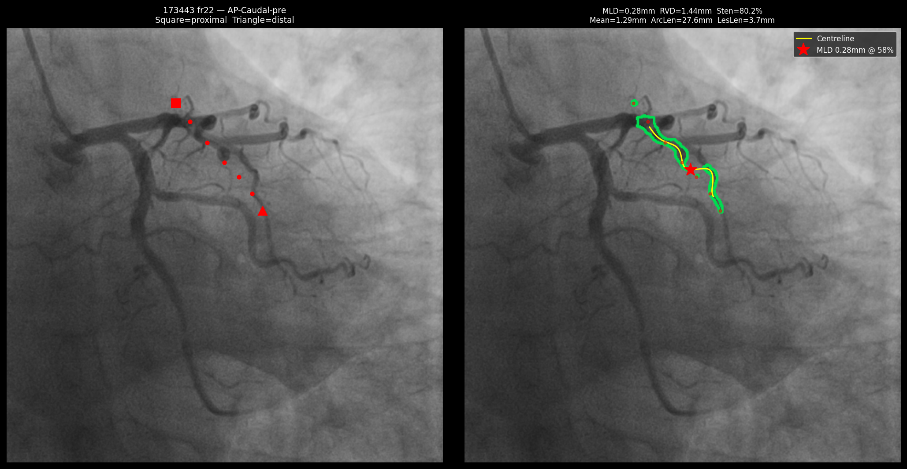
AP Caudal · Frame 22 · Primary seeds
Overlay shows disconnected mask at proximal end. MLD marker at segmentation join — not anatomical.
Raw MLD 0.28mm; v2 interior clip 1.05mm. Range unresolved.
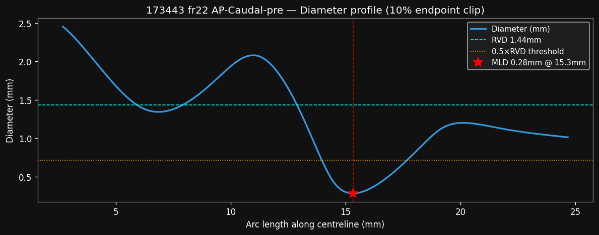
AP Caudal · Frame 22 · Diameter profile
Blue = measured diameter. Teal dashed = RVD. Red star = MLD (0.28mm raw, at 57.5% position).
Profile shape indicative but MLD value unreliable — segmentation artefact at lesion zone.
LCX Pre-stent · Spider / LAO Caudal (Cine 173435, Frame 15)
excluded
Excluded from cross-projection analysis
4 seed placement attempts. Best mask (Sundar-placed via web interface, 17 Nov 2026) produced a
connected strip but with monotonically tapering profile — distal endpoint artefact, no focal stenosis
recoverable. Original scripted run (63–64%) has unverified seed placement. Cardiologist review
of the cine required before any Spider measurement can be validated.
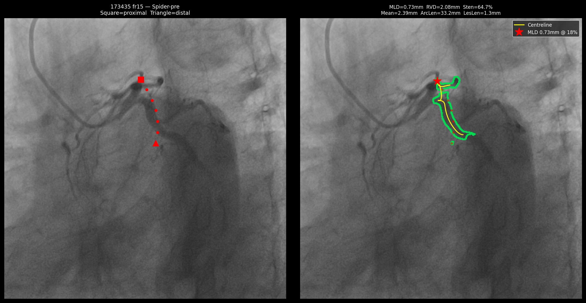
Spider · Frame 15 · Scripted run overlay
Original 7-seed scripted run. Seed 1 in LM/LCX junction complex; seed 7 on island.
Result 63–64% — unverified seed placement, not reproduced in manual re-seeding.
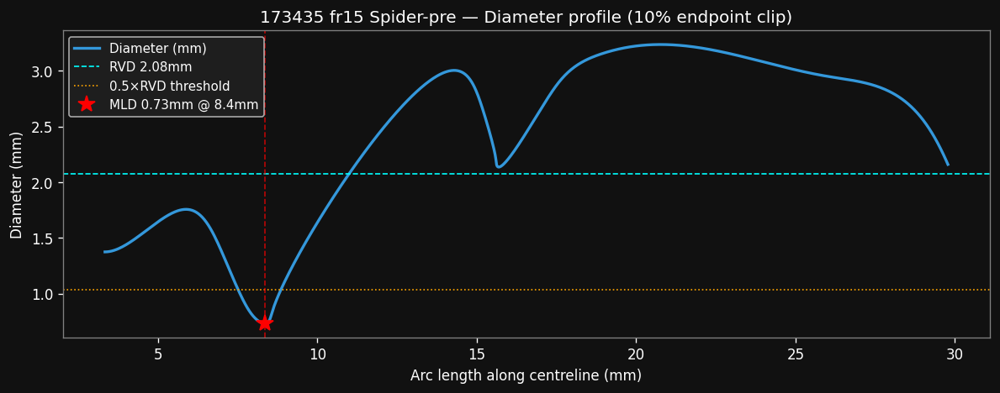
Spider · Frame 15 · Diameter profile (scripted run)
Profile from original scripted run. For contrast: manual re-seeding (17 Nov)
produced monotonic taper proximal ~2.65mm → distal ~1.78mm, MLD at 99.9% — endpoint artefact.
LCX Pre-stent · Cross-Projection QCA Summary (4 valid projections)
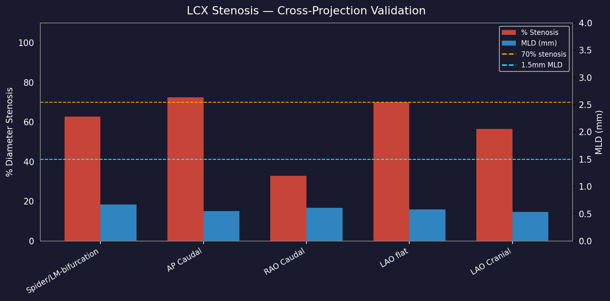
Cross-projection stenosis comparison
From original analysis. Orange dashed = 70% threshold. Note: AP Caudal bars are
from failed segmentation (not used). LAO flat and LAO Cranial bars are RCA, not LCX (withdrawn).
4 valid projections: RAO CRA, RAO CAU, LAO CRA, LAO CAU.
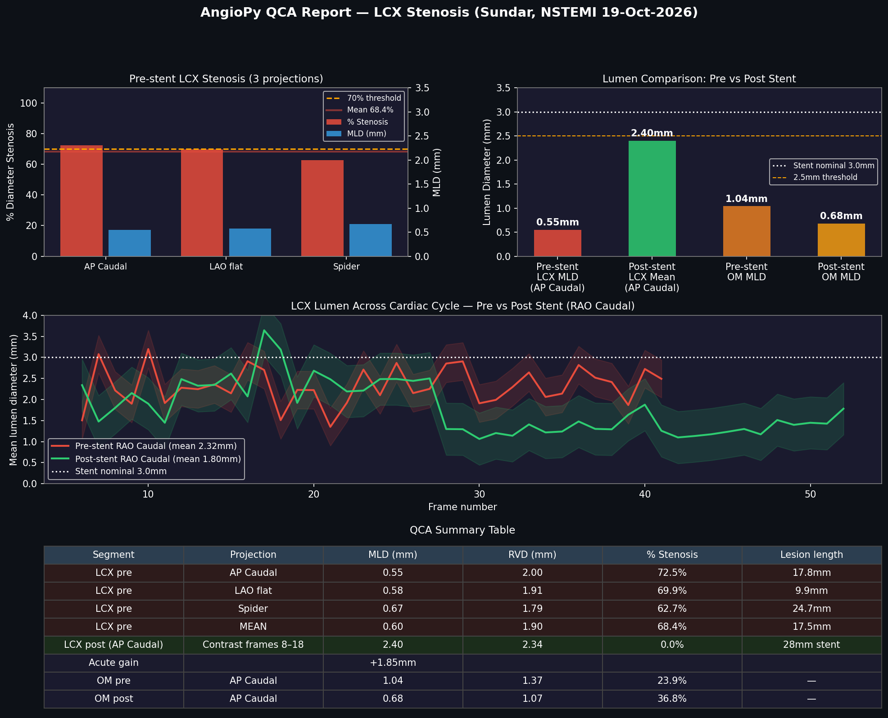
QCA analysis figure
Corrected QCA results across projections after audit (5 Nov 2026).
pixel_mm = 0.1694 mm/px for all LCX projections.
LCX Post-stent · AP Caudal (Cine 175254)
Single-frame MLD withdrawn — endpoint artefact in all frames
Every segmentation of the post-stent vessel produced near-zero MLD at the distal skeleton tip.
AngioPy was not trained on stented vessels (metal struts alter lumen boundary appearance).
Multi-frame mean lumen reported instead: 2.35mm across 11 frames (frames 8–18).
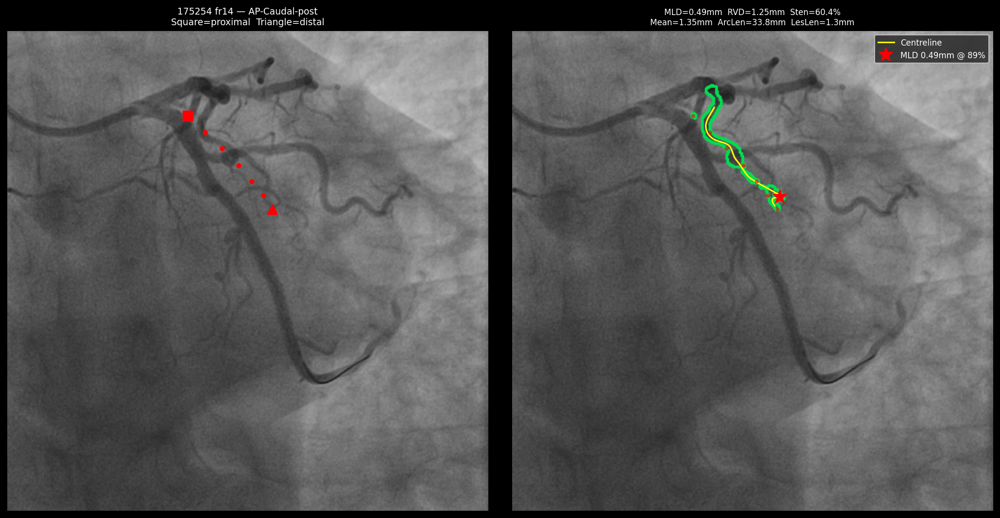
Post-stent · Frame 14 · Overlay
Stented segment visible — vessel appears wider and straighter.
Stent: Xience Sky 3.0×28mm in LCX extending into OM branch.
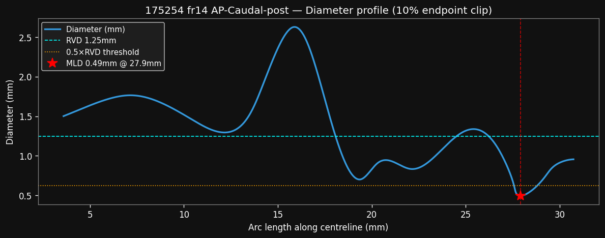
Post-stent · Frame 14 · Diameter profile
Red star (MLD) at 27.9mm — near distal tip. This is endpoint artefact, not a real narrowing.
Vessel runs 1.5–2.5mm through most of its length.
LAD · LAO Cranial (Cine 173515)
unverified
Branch identity unresolved — result not validated
Two neighbouring descending traces visible in the seed region. Branch identity (LAD mainstem
vs diagonal) could not be established from this projection alone. Computational result
30–38% is concordant with clinical ~30% but seed correction has not been made.
An interventional cardiologist tracing each vessel from its origin in the full cine is required.
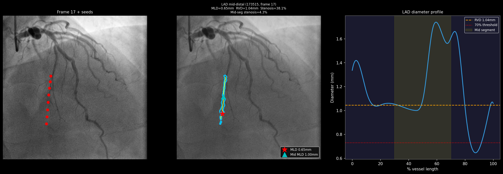
LAD · Frame 17 · Overlay
MLD 0.65mm, stenosis 38.1%. Seeds placed on mid-to-distal LAD only — proximal
bifurcation zone excluded due to overlap with diagonal branch.
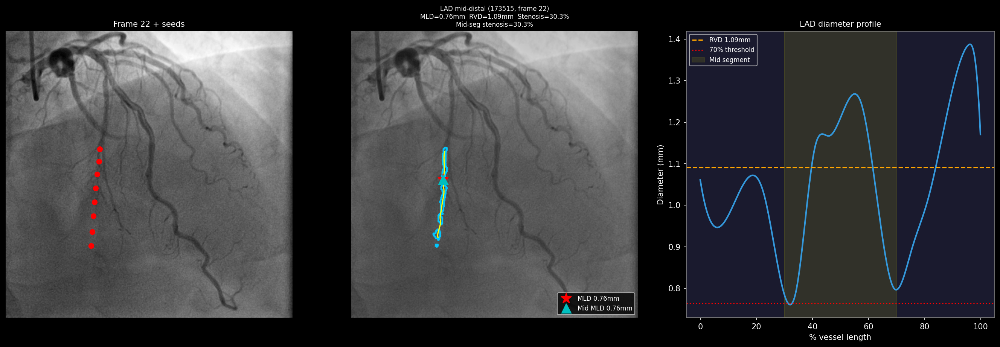
LAD · Frame 22 · Overlay
MLD 0.76mm, stenosis 30.3% — matches clinical report of ~30% exactly.
Branch identity still unresolved from overlay alone.
RCA · LAO 46° (Cine 173602) — Mislabelled as LCA on hospital CD
RCA cines identified by Gemini 2.5 Pro
Cines 173602 and 173610 were labelled "Left Coronary 15 fps" on the CD — standard Philips
Azurion behaviour when the protocol preset is not changed between catheter swaps.
Visual inspection confirmed these are RCA. Scripted QCA: 28–35% proximal stenosis,
concordant with clinical ~30%.
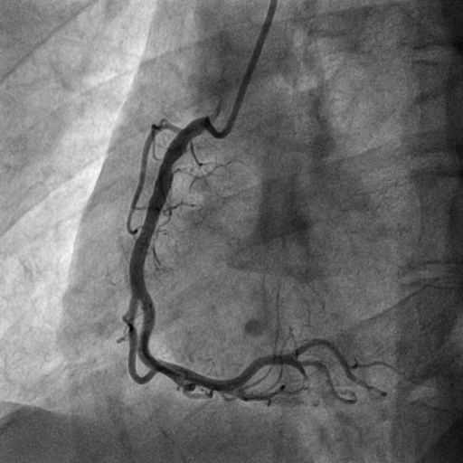
RCA · Cine 173602 · Frame 17 (peak contrast)
Raw DICOM frame. Catheter tip enters from top-centre engaging RCA ostium.
Single C-shaped trunk coursing down right side of heart. Clearly RCA anatomy.
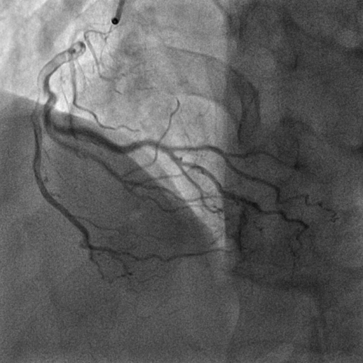
RCA · Cine 173610 · Frame 30 (LAO 27° Cranial)
Distal RCA bifurcation into PDA and posterolateral branches visible at bottom of frame.
Dominant RCA confirmed.
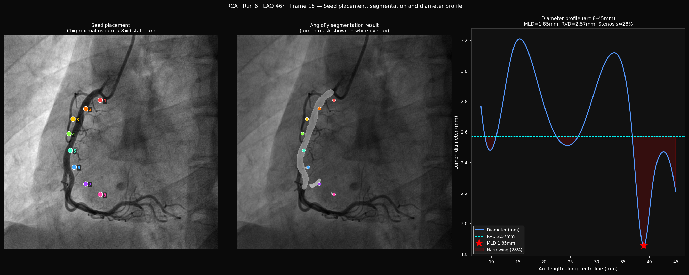
RCA · Frame 18 · Scripted run
Numbered seed placement (left), AngioPy segmentation (centre), diameter profile (right).
Dip at ~39mm arc: MLD 1.855mm, RVD 2.57mm, stenosis 27.8% (28–35% range depending on reference).
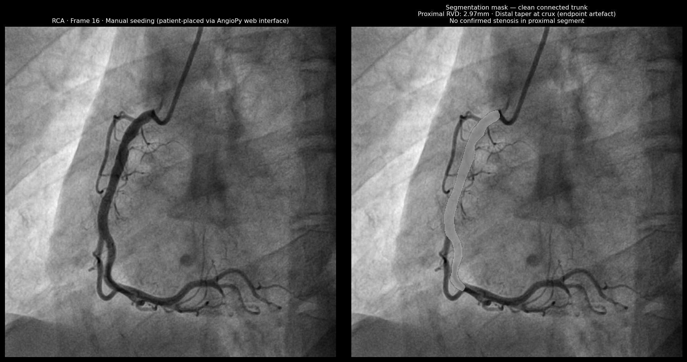
RCA · Frame 16 · Patient-placed seeds (17 Nov 2026)
Sundar placed seeds interactively via AngioPy web interface. Single connected C-shaped
trunk, no disconnected islands. Proximal RVD 2.97mm — most reliable RCA measurement.
MLD at distal endpoint — taper artefact, not stenosis.